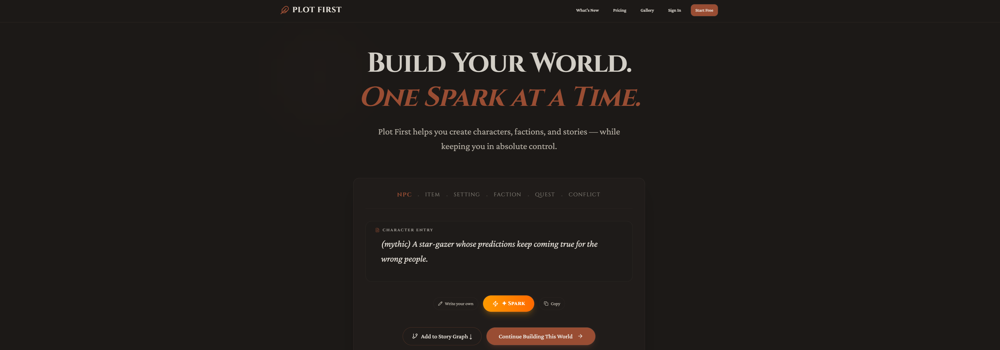
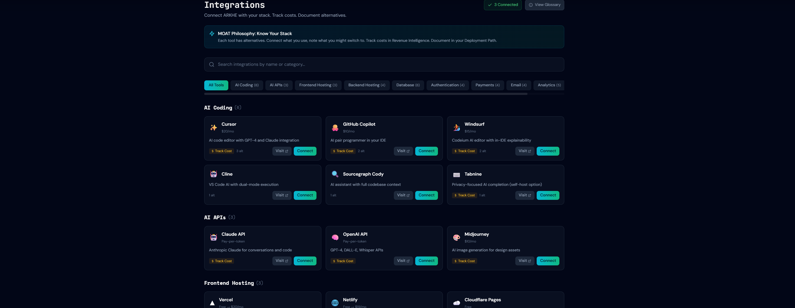

Software developer creating tools, worlds, and experiments.
Myth-inspired exploration game built in Godot.
Structured storytelling platform for writers and designers.
Experimental sandbox for building tools and dev workflows.
A writing tool turning rough ideas into structured stories.

Sandbox for experimenting with dev tools and interaction systems.

Exploration game about restoring islands across an archipelago.
Historical narrative project exploring the successor wars after Alexander the Great.